4 类 (I) - 定义、成员、构造、析构¶
约 4940 个字 252 行代码 14 张图片 预计阅读时间 20 分钟
本节录播地址
本节的朋辈辅学录播可以在 B 站 找到！
Warning
从本节开始，我们在部分内容会尝试直接使用 standard 的相应内容讲解1。由于会涉及到一些尚未讨论的内容，因此这些内容我们会通过脚注的方式给出。初学者可以忽略这些脚注。
因此，从本节开始，类似本节这样有比较大量的参考资料标注和脚注的文章，会提供下面的按钮来帮助提高阅读质量（文末也会有一份）：
本节使用的副本
自本节开始，我们会在讲解类相关的内容时，引入一些 C++ 语法说明。这些说明有的是阐明容易混淆的概念，有的是介绍 C++ 相对于 C 的新语法。这些章节用 ▲ 表示。它们仍然是文章的重要部分，但由于本身话题相对独立，因此单独在导航目录中的「A 附录」一节中展示；正文里的是插件引入的副本，因此本文的字数统计并不包含这些副本。
本节引入的副本包括：
4.1 类的定义¶
我们在上一节已经看到了类的定义的一些具体例子，例如：
1 2 3 4 5 6 7 8 9 10 11 12 | |
在 C++ 中，每个类的定义 (class definition) 引入一个新的类型class.name#1。因此，有了上面的定义，我们就可以用它来声明一个变量，如 Textbox tb; 声明并定义basic.def#2了一个类型为 Textbox，名为 tb 的变量。
Note
在 C++ 中，用类来定义变量时，不必像 C 语言那样带有 struct 关键字。即，如果有 class Foo 或者 struct Bar 的定义，那么 Foo x;, class Foo x;, Bar b;, struct Bar b; 都是合法的声明语句。这是因为，从 C with Classes 设计之初就希望让用户定义的类型不是二等公民，而是能被与内置类型一样的方式使用。
Elaborated type specifiers
带有 struct 或者 class 关键字的类型名 (如 class Foo) 叫做 Elaborated type specifiersdcl.type.elab。
在 C 语言中，类似 struct x {}; int x; 是符合语法的：虽然这会使得名字 x 既表示一个结构体，又表示一个变量；但在 C 语言中这不会引起歧义，因为当 x 表示结构体时必须带上 struct 关键字。不过在 C++ 中，直接使用 x 就只能引用到变量 x 了，因为此时 int x; 的 x hides struct x {}; 的 xbasic.scope.hiding。
但是为了兼容 C，C++ 并没有禁止上述写法，而是规定可以通过 Elaborated type specifiers 显式地来使用结构体 x，即使用 struct xbasic.lookup.elab#1,class.name#2；对 class 也一样。
Elaborated type specifiers 还在 forward declaration 以及 enum 中有用途。
具体来说，类的定义具有如下形式2class.pre#1,2：
{kind=link}
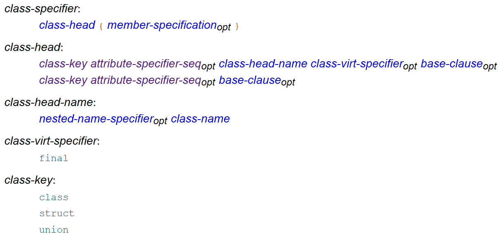
- 这里的 opt 指明某个元素是可选的。例如，class-specifier: class-head { member-specificationopt } 说明 class-specifier 中可以没有 member-specification，例如
class Foo {}或者class A : public B {}之类的。 - 这里的 class-name 是一个 identifier3，例如上面的
Foo和A。 - 这里的 class-key 决定了类是否是一个 union，以及默认情况下成员是 public 的还是 private 的。union 一次最多保存一个数据成员的值。也就是说，在 C++ 中，struct, class, union 都是类。但是在本节的后续讨论中，我们暂时只讨论 struct 和 class。
- 这里的 attribute-specifier-seq 和 class-virt-specifier 现在暂时不用管。
- 这里的 base-clause 定义为
base-clause : base-specifier-list，是用来处理派生类的。例如 1 中的: public B。 - 这里的 nested-name-specifier 是
::或者Foo::之类的东西，其意义可以看下面的例子45：
在 C++ 中，类的定义会引入新的作用域，其范围是 member-specification 等basic.scope.class#110。因此这里的https://godbolt.org/z/shjxaKhxc 1 2 3 4 5 6 7 8 9 10 11 12 13 14 15 16 17 18 19 20 21
class Inner { }; class Outer { public: class Inner { int x; }; Outer::Inner i; Inner i2; ::Inner i3; // global Inner struct A; // declares struct Outer::A }; struct Outer::A {}; // defines struct Outer::A int main() { Outer o; Inner i4; Outer::Inner i5; printf("%d %d %d %d %d", sizeof o.i, sizeof o.i2, sizeof o.i3, sizeof i4, sizeof i5); // Possible output: 4 4 1 1 4 return 0; }Outer::Inner和外面的Inner可以同时存在9。
这里第 7 行访问到Outer::Inner是因为 Name Hidingbasic.scope.hiding，即我们熟悉的作用域屏蔽11。
C 和 C++ 都是按名等价 (name equivalence) 而非按结构等价 (structural equivalence) 的6，例如class.name#1：
{kind=link}
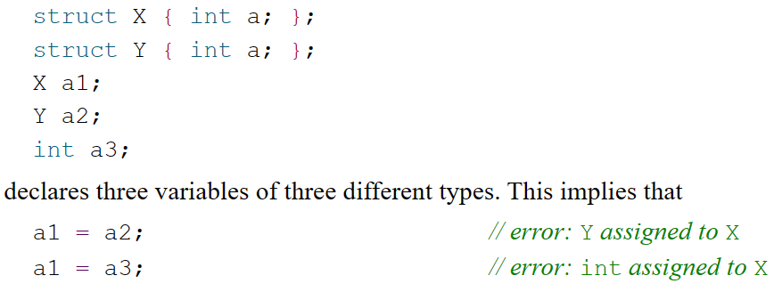
Forward Declaration
如果当前作用域没有名为 identifier 的类，那么形如 class-key attr identifier ; 的声明是一个 forward declarationclass.name#2。
例如 class Foo;，它声明了一个叫 Foo 的类；但直到这个类被定义之前，它的类型是不完整的basic.types.general#5。
不完整的类型有一些限制，但是也有一些可以完成的操作。例如不完整的类型不能用来定义变量（包括成员变量）、作为函数声明或定义的参数或者返回值类型等；但是可以定义指向它的指针。
例如，常见的用途是，两个类可能会互相使用。这时就可以写出类似下面这样的代码：
1 2 3 4 5 6 7 8 9 10 | |
这时第 1 行是必须的，否则第 3 行的 X 就是一个未知的类型。
Injected Class Name
C++ 规定，A class-name is inserted into the scope in which it is declared immediately after the class-name is seen. The class-name is also inserted into the scope of the class itself; this is known as the injected-class-nameclass.pre#2。这就是 struct Node { Node* next; }; 能够使用 Node 的原因。
但是，考虑内存布局容易理解，class C 内部不能有 non-static data member of type C。
▲ 声明与定义¶
声明将名字引入或重新引入到程序中。定义是声明的一种，指的是那些引入的名字对应的实体足以被使用的声明。
standard
[basic.pre#5]: Every name is introduced by a declaration
[basic.def#2]: Each entity declared by a declaration is also defined by that declaration unless:
- it declares a function without specifying the function's body
- it contains the extern specifier or a linkage-specification (
extern "C" {}) and neither an initializer nor a function-body, - it declares a non-inline static data member in a class definition
- ...
声明「重新引入」的例子是：
extern int i;
extern int i;
int f(int);
int f(int x);
上面的例子是合法的。它们只是 i 和 f 的声明而非定义。
而下面的语句都是定义：
int a; // defines a
extern const int c = 1; // defines c
int f(int x) { return x+a; } // defines f and defines x
struct S { int a; int b; }; // defines S, S::a, and S::b
enum { up, down }; // defines up and down
S anS; // defines anS
例外
不过，也有一些不合法的情况，例如：
int i;
int i;
这个例子会报 "redefinition of 'int i'" 错误。
根据上面的讨论，这两个语句都属于定义。[basic.scope.scope#5] 规定 "The program is ill-formed if, in any scope, a name is bound to two declarations that potentially conflict and one precedes the other"。因此如果这两个 i 代表不同的 entity，则违反了这条规定；如果代表同一个 entity，则违反了 One-Definition Rule (ODR) [basic.def.odr#1] "No translation unit shall contain more than one definition of any variable, function, class type..."。
因此，下面的例子也是不合法的：
extern int i = 1;
extern int i = 2;
因为这两个语句也都属于定义。
另外：
extern int i;
extern char i;
这个例子会报 "redeclaration of 'i' with a different type" 错误std_citation_needed。
4.2 类的成员¶
member-specification 说明了类的成员。其结构如下class.mem.general：
{kind=link}
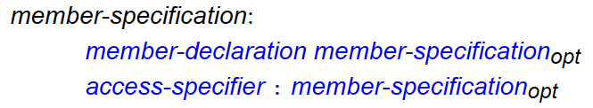
其中 member-declaration 是成员的声明，而 access-specifier 是 private, public, protected 之一（前面两个我们讨论过了，第三个我们会在后文讨论）。成员可以包括成员变量、成员函数，也可以（嵌套的）类、枚举等，如本文前面代码中的 Outer::Inner，还可以包括声明类型的别名（如 typedef 和 using）等12。
Type alias
C++11 引入了 using 来声明类型别名，它的用途和 typedef 类似，如 typedef struct arraylist_* arraylist; 可以写成 using arraylist = struct arraylist_ *;。
类型别名的声明也可以是类的成员，其作用域是类的作用域，同样受 access-specifier 的影响。例如：
1 2 3 4 5 6 7 8 9 10 11 12 | |
using 被引入是为了支持模板。我们在讲到模板的时候再来讨论这些问题。
类的成员函数可以在类内直接给出定义，也可以在类内只声明，在类外给出定义；这不影响成员函数的 access-specifier：
class Foo {
int x = 0;
void foo(int v) { x += v; }
void bar(int v);
};
void Foo::bar(int v) { x += v; }
int main() {
Foo f;
f.bar(1); // Error: 'bar' is a private member of 'Foo'
}
另外，和全局函数一样，类的成员函数也可以只有声明没有定义，只要这个函数没有被使用：
void f(); // OK if f() is never called;
// if called, link error may occur
struct Foo {
void bar(); // ditto
}
this 指针¶
我们之前介绍过，C++ 早期会被编译成 C 语言，然后再编译成汇编。那么问题来了！例如上面代码中的 Foo::bar 函数，如何编译成 C 中的函数呢？这一问题的难点是：这个函数里访问了调用这个函数的对象 (不妨称之为 calling object) 的成员变量 x；那么这个函数如何知道 calling object 在哪里，从而访问它的成员变量呢？
答案是，每个成员函数13都会被视为有一个 implicit object parameter，它即是 calling object。而在成员函数的函数体中，this 表达式的值即是 implicit object parameter 即 calling object 的地址。
在成员函数的函数体中，访问任何成员时都会被自动添加 this->，例如 void Foo::bar(int v) { x += v; } 中的 x += v; 实际是 this->x += v;。
下图中，汇编第 17~19 行将参数 ff 放到了第一个参数的位置，20 行调用 f()，事实上就是将这个对象的地址隐式传入其中了。
{kind=link}
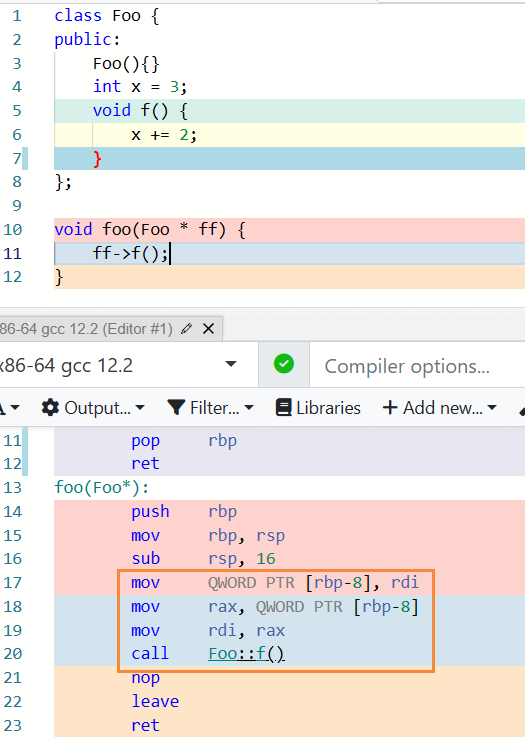
自 C++23 开始，this 关键字有了新的含义。我们将在后面的章节讨论。
成员函数不能重新声明
如果写了这样的代码：
class Foo {
void foo();
void foo();
}
gcc 12.2 会给出这样的报错：'void Foo::foo()' cannot be overloaded with 'void Foo::foo()'
这会让人比较疑惑，因为这两个明明都只是声明。错误的原因其实是，标准规定，类的成员函数不应被重新声明，除非这个重新声明是出现在类定义之外的成员函数定义14class.mfct#2。
clang 16.0.0 给出的报错就合理许多：error: class member cannot be redeclared
▲ inline 函数¶
我们在 OOP 一节中，讨论封装时介绍了 getters 和 setters：
1 2 3 4 5 6 7 8 9 10 11 12 13 | |
但是，众所周知，函数调用是有开销的，函数开销主要用来传递参数和获取返回值，需要时还要保存寄存器的值。看下面的例子：
{kind=link}
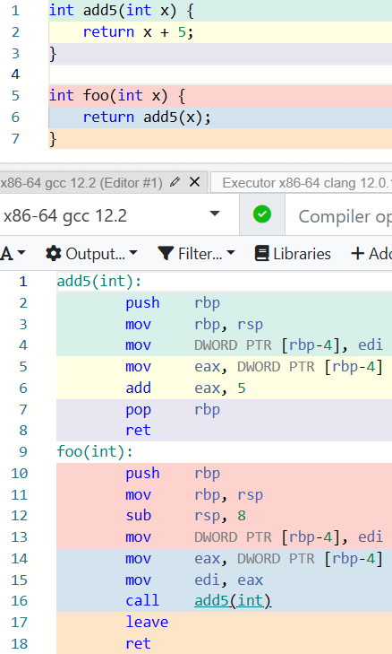
可以看到，虽然 int foo(int x) { return add5(x); } 和 int foo(int x) { return x + 5; } 是等效的；但是由于函数调用的存在，其效率是慢的。那么，getAge() 作为一个函数，是否也有这种代价呢？
C++ 的设计哲学决定了：不应当因为封装性而带来额外的性能开销。如果 getters 和 setters 的调用也需要额外开销的话，追求效率的程序员就会选择不使用封装。因此这个问题如何解决呢？早在 C with Classes 设计之初，这个问题就通过 内联替换 (inline substitution)dcl.inline#2 被解决了。
内联替换有点类似于 function-like macroscpp.replace.general#2，即在函数调用的地方将函数体展开，而不经过函数调用的步骤。作为一个例子，在选择 -O1 优化的情况下，上面的代码会变成这样：
{kind=link}
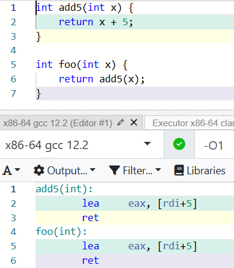
可以明显看到，foo() 的计算过程中不再有函数调用出现了。
再举一个例子，如果有这样的代码：
void swap(int *a, int *b) {
int tmp = *a;
*a = *b;
*b = tmp;
}
void foo() {
// ...
swap(a, b);
// ...
swap(x, y);
// ...
}
如果 swap 函数被内联，那么程序可能会等价于：
void foo() {
// ...
int tmp = a;
a = b;
b = tmp;
// ...
tmp = x;
x = y;
y = tmp;
// ...
}
有了内联替换，getter 和 setter 就不再有额外的开销了：
{kind=link}
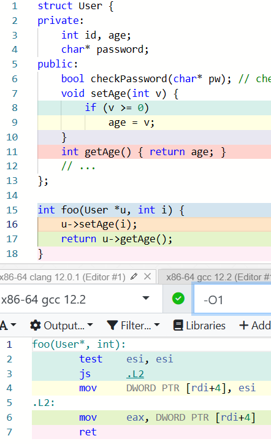
Note
内联函数是 C++ 和 C 共同发展的一个例子。在 C89 中并没有内联函数，而 C99 和 C++ 中都有内联函数。
C++17 开始，inline 还被用于变量。我们会在（也许）不远的将来讨论这个话题。
那么，什么样的函数会被内联呢？在 C with Classes 中，只有那些函数体写在类的定义中的成员函数才会被内联。当然，并非所有这样的函数都会被内联，比如如果某个函数是递归的，那么这个函数很可能就没办法被内联。（当然，如果编译器想的话，可以通过递归展开实现内联。）
而在后来的 C++ 中，inline 关键字被引入；它用在函数声明中，例如 inline int foo(int x) { return add5(x); }。它向编译器表明一个建议：这里应该优先考虑使用内联替换而非通常的函数调用。函数体写在类的定义中的成员函数也会默认有此建议。（但是编译器通常忽略这种建议，而自己选择是否需要内联。例如前面图中 add5 那个函数，虽然我们没有写 inline，但是编译器仍然决定将它内联。）
显然，内联也是有代价的。如上面的例子所示，内联会在 每处 调用被展开，因此如果被内联的函数非常大，则会导致生成的目标代码很大，这会带来内存紧张或者局部性问题；这也可能会对性能产生一定影响。
内联函数是 C 语言中 function-like macros 的一个好的替换。BS 说，C++ 希望「允许用语言本身表达所有重要的东西，而不是在注释里或者通过宏这类黑客手段」。宏是预处理器负责的事情，而非编译器。因此 function-like macros 的重大问题之一是缺乏类型检查，另外会因为括号之类的问题引发困扰。用内联的函数替代 function-like macros 也能够有作用域和访问控制，而这些如果使用宏则需要手动控制甚至没办法实现。
Info
内联函数还有相关的很多问题。例如，假如在整个程序中的不同编译单元里，同一个内联函数有不同定义会发生什么事。由于 C++ 允许分别编译，这样的检查是极端困难的。因此，标准规定这种情况是 undefined behaviorstd_citation_needed。我们会在未来聊 undefined behavior 相关的问题。
这个回答 指出：Don't add inline just because you think your code will run faster if the compiler inlines it. ... Generally, the compiler will be able to do this better than you.
因此，实际上在现在的 C++ 中，inline 比「让一个函数被内联」更重要的作用在于，帮助实现 header-only 的库。
4.3 构造函数¶
构造函数 (constructor) 是一种特殊的成员函数，用于初始化该类的对象。构造函数 constructor 也时常被简写为 ctor 或者 c'tor 等。
用 BS 的话说，构造函数的意义之一是「使程序员能够建立起某种保证，其他成员函数都能依赖这个保证」。例如：
1 2 3 4 5 6 7 8 9 | |
在上面的程序中，第 5 行的 Container() 是构造函数。它和其他成员函数的区别是，它不写返回值类型，而且它直接使用类的名字。（构造函数并没有名字class.ctor.general#2。）
第 6 行的 val = nullptr; 就是前面提到的「保证」，即 val 的值要么是 nullptr，要么是其他成员函数赋的值，而不会是个随机的值。
nullptr
nullptr 是 C++11 引入的一个关键字，用来表示空指针。这与 C 中的 NULL 不同，虽然后者在 C++ 中也能使用。我们在稍后介绍 nullptr 为什么会被引入。
这样，就可以使用 Container c = Container(); 构造一个对象了15。
Container(); 会返回一个构造出的无名对象。不严谨地说，上面的语句将名字 c 绑定到了对应的无名对象上。为了代码更加简洁紧凑，C++ 允许更加简洁的写法：Container c;。
因此，当我们在用 Container c; 定义一个对象时，就会调用构造函数。例如：
{kind=link}
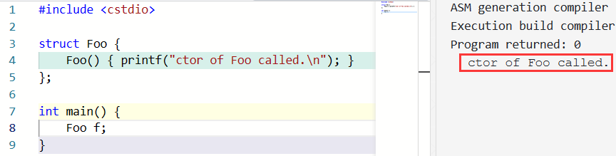
也就是说，由于定义一个对象时需要用到构造函数，因此如果要用的构造函数是 private 的，对象就无法被构造：
{kind=link}
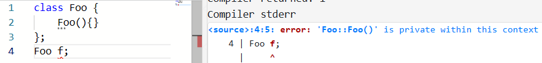
Foo() 是调用构造函数的函数调用表达式吗？
不是！看下面的代码：
Foo f = Foo();
Foo f2 = Foo::Foo();
第二行会有报错：
{kind=link}
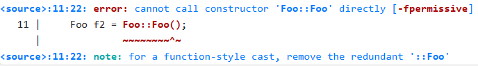
即，我们不能直接调用构造函数，这是因为 构造函数并没有名字，因此永远无法被用名字找到class.ctor.general#2。Foo(); 的写法并不是对构造函数的调用，而是一个 "function-style cast"。
这是什么东西呢？我们知道 C 语言中的类型转换 (cast) 表达式形如 (int)3.2（称为 C-style cast），而 C++ 引入了形如 int(3.2) 的 function-style cast。int(3.2) 将 3.2 显式地转换为了一个临时的 int 对象；类似地，Foo() 也（什么都不用地）显式地转换出了一个临时的 Foo 对象。虽然这个转换本身会使用到构造函数，但是这个表达式本身不是在调用构造函数。
这个东西的重要用途之一也是模板。我们会在后面的章节中再次讨论。
像普通的函数一样，构造函数可以是有参数的。例如，下面的构造函数允许用户传递一个初始大小，然后直接开一个对应大小的空间：
1 2 3 4 5 6 7 8 9 10 | |
这样，就可以使用 Container c2 = Container(64); 构造一个自定义大小的容器了。
同样地，C++ 允许更加简洁的写法：Container c2(64);。即，如果无参地构造，则不需要写出括号；如果有参构造，则将参数写在括号中。
也就是说，在 C++ 中，声明变量时的 初始化器 (initializer) 除了类似 int a = 4; 的 = initializer-clause 之外，还有类似 int a(4); 的 ( expression-list )dcl.init.general#1。1617
无参构造时为什么不用括号呢？
这个问题被称为 most vexing parse。如果它加了括号，变成了 Container c1();，会被理解成什么呢？
我们来看这个东西：int func();，这显然是一个函数声明；而 Container c1(); 的语法结构与其完全相同，因此这样的表述是有歧义的。
因此，C++ 规定无参构造时不用带括号（准确地说，声明语句中要么没有 initializer，如果有 initalizer 且是括号的形式的话则括号里不能为空dcl.init.general#1）。
C++11 引入的 brace initialization（也被称为 uniform initialization）一定程度上解决了这个问题。我们在后面的章节讨论这个机制。
动态内存分配¶
我们之前提到，构造函数存在的意义是给该类的每个对象提供一定的「保证」，而 C++ 通过确保每个对象都执行过构造函数来提供这一保证。但是，我们在 C 中知道通过 malloc 动态分配内存的方式；那么如果我们写 Container *p = (Container *)malloc(sizeof(Container)); 会发生什么呢？
事实上，这确实分配了 sizeof(Container) 那么大的空间，但是确实也没有调用构造函数。因此，C++ 引入了新的用于创建动态对象的操作符 new 以及对应的用来回收的 delete。
new 表达式可以用来创建对象或者数组：int * p1 = new int; int * pa = new int[n];。
如果是类的对象，则构造函数会被调用：
{kind=link}
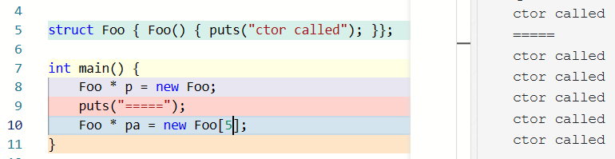
new 表达式也可以包含初始化器，但是只能是 ( something ) 或者 { something } 的形式，不能是 = something 的形式：
{kind=link}
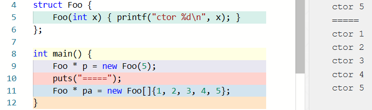
new 表达式干的事情是申请内存 + 调用构造函数，返回一个指针；而 delete 表达式干的事情是调用析构函数 + 释放内存。new 表达式是 唯一 的用来创建动态生命周期对象的方式（因为 malloc 只是开辟内存，并不创建对象。对象是「a region of storage with associated semantics」）。
delete 会调用类对象的析构函数：
{kind=link}
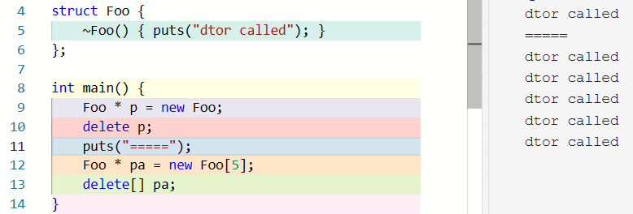
如上面例子所示，如果 p 在 new 的时候创建的是单个对象，则应该用 delete p; 的形式 (single-object delete expression) 回收；如果 p 在 new 的时候创建的是数组，则应该用 delete[] p; (array delete expression) 的形式回收，否则是未定义行为 (UB, undefined behavior)expr.delete#2；这种情况下任何情况都有可能发生，包括但不限于（不需要诊断信息的）编译错误、运行时错误，或产生意料之外的运行结果等。我们会在后面的章节中具体讨论未定义行为。
关于 new 和 delete，我们还有一些话题没有讨论，例如 operator new 等以及 placement new。我们会在后面的章节中讨论相关问题。
▲ 函数默认参数与函数重载¶
默认参数¶
这样的构造函数允许用户传递一个初始大小，然后直接开一个对应大小的空间：
1 2 3 4 5 6 7 8 9 10 | |
那么，假如我们希望用户既可以给定大小，也能够在不知道要开多大的情况下使用一个默认大小，怎么办呢？C++ 在函数声明中支持 默认参数 (default arguments)，用来允许函数可以以省略末尾的若干参数的方式调用：
void point(int x = 3, int y = 4);
point(1, 2); // calls point(1, 2)
point(1); // calls point(1, 4)
point(); // calls point(3, 4)
默认参数必须出现在末尾的若干个参数中。这个要求的合理性容易理解：假如没有这个要求，那么如果有 void point(int x = 3, int y);，则 point(4); 的含义是容易让人迷惑的。
因此，Container 类的构造函数可以写成：
1 2 3 4 5 6 7 8 9 10 | |
这样，就可以使用 Container c1; 构造一个默认大小 (512) 的容器，或者用 Container c2(64); 构造一个自定义大小的容器了。前者实际上是 Container(512)，而后者是 Container(64)。
补充
对于非模板函数，如果已声明的函数在 同一作用域 中重新声明（在内部作用域内的重新声明会出发作用域屏蔽），则可以向该函数添加默认参数。在函数调用时，默认值是该函数所有可见声明中提供的默认值的并集。对于默认值已经可见的参数，重新声明不能引入默认值（即使值相同）。
void f(int, int); // #1
void f(int, int = 7); // #2 OK: adds a default
void h()
{
f(3); // #1 and #2 are in scope; makes a call to f(3,7)
void f(int = 1, int); // Error: inner scope declarations don't acquire defaults
}
带默认参数的友元函数声明必须是一个定义，且 translation unit 中不能有其他声明。
默认参数不允许使用局部变量，除非它们 not evaluated（比如 sizeof n，参见 std notes 6.3）。
除了函数调用运算符 operator() 之外的运算符重载不能有默认参数。
函数重载¶
那么，假如我希望根据是否传入某个参数来选择不同的构造函数，怎么办呢？例如我们希望 Container 的构造函数长这样：
Container::Container(unsigned size, elem initVal) {
val = (elem*)malloc(sizeof(elem) * size); // allocate memory
for (unsigned i = 0; i < size; i++) { // set init values
val[i] = initVal;
}
}
但是！我们希望如果没有传入 initVal，就不要做那个 set init values 的循环怎么办呢？固然我们可以通过默认参数结合判断来实现，但是假如我们可以根据不同的传入参数来使用不同的构造函数就更好了！
事实上，C++ 支持这样的操作，这被称为 函数重载 (function overloading)：
class Container {
elem* val;
// ...
public:
Container() { val = nullptr; }
Container(unsigned size) {
val = (elem*)malloc(sizeof(elem) * size);
}
Container(unsigned size, elem initVal) {
val = (elem*)malloc(sizeof(elem) * size);
for (unsigned i = 0; i < size; i++) {
val[i] = initVal;
}
}
};
这样，当我们使用 Container c1, c2(4), c3(6, 2); 定义三个对象时，它们会分别使用无参、一个参数和两个参数的构造函数：
{kind=link}
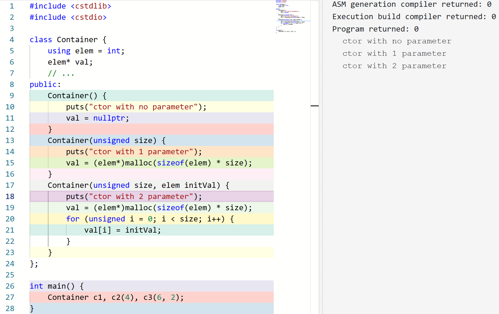
事实上，不仅是构造函数支持重载，其他的成员函数或者独立的函数18也支持重载。例如over.pre#2：
double abs(double);
int abs(int);
abs(1); // calls abs(int);
abs(1.0); // calls abs(double);
如果一个名字引用多个函数，则称它是 overloaded 的。当使用这样的名字的时候，编译器用来决定使用哪个；这个过程称为 重载解析 (overload resolution)。简单来说，重载解析首先收集这个名字能找到的函数形成候选函数集 (candidate functions)，然后检查参数列表来形成可行函数集 (viable functions)，然后在可行函数集中按照一定的规则比较这些函数，如果 恰好 有一个函数 (best viable function) 优于其他所有函数，则重载解析成功并调用此函数；否则编译失败。
上面的「规则」比较复杂19，但是一个简单的例子是，不需要类型转换的比需要的要好20：
{kind=link}
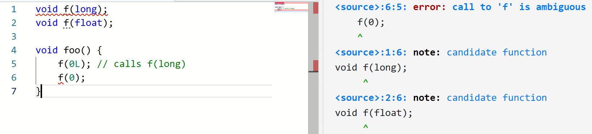
因此，上面第 5 行的 f(0L); 中 0L 是 long 类型的字面量，它调用 void f(long) 不需要转换，而调用 void f(float) 需要转换，因此选取前者。
但是，上面第 6 行的 f(0); 中 0 是 int 类型的字面量，它调用两个函数都需要转换，且两个转换没有一个优于另一个20，因此找不到 best viable function，因此编译错误。
也是因此，两个只有返回值类型不同的函数不是合法的重载，因为调用时没有办法完成重载解析：
int f(int a);
void f(int a); // error: functions that differ only in
// their return type cannot be overloaded
我们会在后面的章节具体讨论重载解析的细节。
nullptr
我们在前面的章节看到了 nullptr，这是 C++11 引入的一个关键字，用来表示空指针。
为什么要引入这个东西呢？我们首先要提到一个事实：为了类型安全，C++ 不允许 void* 隐式转换到其他指针类型。因此，如果我们将 NULL 定义为 (void*) 0，那么 int * p = NULL; 会引发编译错误：
{kind=link}
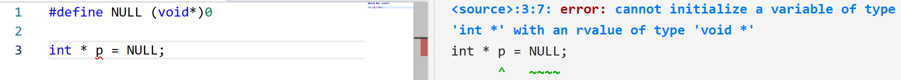
（这是 C++ 与 C 不兼容的例子之一。）
既然 C++ 不允许将 (void*) 0 当空指针，那么我们用什么表示空指针呢？在 C++11 之前，空指针常量 (null pointer constant) 是值为 0 的整型字面量conv.ptr#1。
因此，如果我们将 NULL 定义为 0，则 int * p = NULL; 即 int * p = 0; 是合法的（赋值成其他整数是不合法的）。
但是！问题来了——
void f(int *);
void f(int);
#define NULL 0
f(NULL); // ==> f(0) , so f(int) is called
可以看到，重载使得上面的情况可能引起误解，造成意料之外的结果。
因此，C++11 引入了 nullptr 来表示空指针常量。这样就解决了上面的问题：
void f(int *);
void f(int);
f(nullptr); // f(int *) is called
因为 null pointer constant 可以转换到任意指针类型conv.ptr#1。
当然，为了兼容，值为 0 的整型字面量仍然是空指针常量。
考虑函数重载和默认参数共同使用的情况，事实上仍然能通过上面「重载解析」的方式处理：
void f(int i = 1);
void f();
void foo() {
f(1); // OK, call the first one
f(); // Error: ambiguous
}
不过我们可能会发现，函数重载的作用已经足以覆盖默认参数的作用。事实上确实如此：默认参数机制在 C with Classes 时就存在了，其意义就是前面给出的构造函数中默认参数的例子；而一般的函数重载直到 Release 1.0 才被引入。默认参数机制是重载机制的前驱之一；重载机制的另一个前驱是 operator = 的重载，我们会在后面的章节看到它。
重载如何处理链接问题
一种实现是，将 void foo(int i); 产生的函数名字称为 foo_Fi，void foo(int i, char *j); 产生的函数名字称为 foo_FiPc 之类的。这同时能够完成在链接时的类型安全检查。另一方面，为了和 C 链接，C++ 引入了扩充 extern "C" { ... }，从而告诉编译器在这些部分采用 C 的命名习惯。
4.3 构造函数 (Cont.)¶
关于构造函数，我们还有几个问题可以讨论！
implicitly-declared default constructor¶
我们称一个能够无参调用的构造函数是 default constructor。即，它不接收任何参数，或者所有参数都有默认值。
有一个问题是，我们在讲构造函数之前的代码里都没有写构造函数，但是它们也能正常编译运行！C++ 也希望在没有必要的理由时不与 C 发生不兼容，而 C 中的 struct 也没有写构造函数，但是它们也能被运行。这是怎么回事呢？
事实上，对于一个类，如果用户没有提供任何构造函数，则编译器会自动为这个类创建一个 public 的 implicitly-declared default constructor，它被定义为 defaulted。Defaulted 的构造函数不接收任何参数，也什么都不做。如果有任何用户提供的构造函数21，则 defaulted default constructor 被定义为 deleted 的。deleted 的函数不能被调用。
不过，如果用户提供了构造函数，他仍然可以用 ClassName() = default; 来引入 defaulted 的构造函数。
用户还可以通过 ClassName() = delete; 显式地将 default constructor 设置成 deleted 的。
member initializer lists¶
总结
如果您并非初学者，这里 有关于该话题更详尽的总结。
一个问题是这样的：假如我们希望根据构造函数的一些参数来初始化一些成员，我们固然可以这样写：
1 2 3 4 5 6 7 8 9 10 11 12 | |
但是这样很累！于是 C++ 允许这样的写法：
1 2 3 4 5 6 7 | |
构造函数定义中形如 : member(expr), member(expr) 的东西叫做 member initializer listsclass#base.init-1，用来指明成员变量的初始化器 (initializer)。这些初始化会在构造函数的函数体执行之前完成。
在一些情况下，member initializer lists 是必要的。例如：
1 2 3 4 5 6 7 8 9 10 11 12 | |
C++ 规定，在构造函数的函数体执行之前，所有参数要么按照 member initializer lists 的描述初始化，要么以默认方式初始化class.base.init#13。而对于类的对象，「默认方式初始化」意味着使用 default constructor 构造。然而，Point 类并没有 default constructor，因此如果 member initializer lists 没有指明 Point 类的初始化方式，就会出现编译错误：
{kind=link}
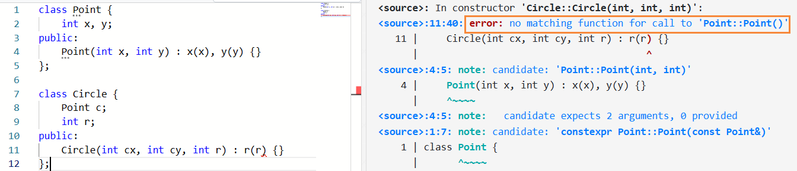
在后面的章节中，我们还会看到更多 member initializer lists 是必要的的情况。
补充
如果构造函数的声明和定义分离，则 member initializer lists 应当出现在构造函数的定义中。
member initializer list 的顺序不影响成员被初始化的顺序，它们按照在类定义中的顺序初始化。例如：
{kind=link}
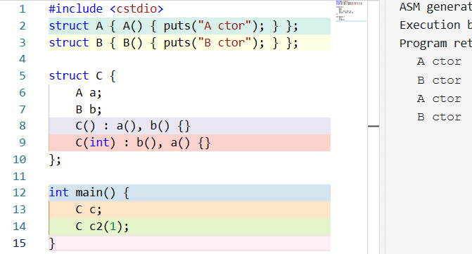
delegating constructor¶
member initializer list 可以将构造委托给同一类型的另一个构造函数，做出这一委托的构造函数称为 delegating constructor；如果这样的话，member initializer list 应当只包含这一个项目。目标构造函数由重载解析选取，其运行结束后，delegating constructor 的函数体被执行class.base.init#6。一个构造函数不能直接或间接地被委托给自己。
struct C {
C( int ) { } // #1: non-delegating constructor
C(): C(42) { } // #2: delegates to #1
C( char c ) : C(42.0) { } // #3: ill-formed due to recursion with #4
C( double d ) : C('a') { } // #4: ill-formed due to recursion with #3
};
{kind=link}
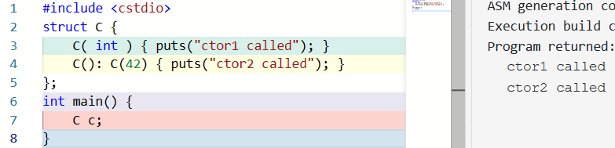
可见，被委托的目标构造函数运行完输出 ctor1 called 后，委托构造函数运行，输出 ctor2 called。
default member initializer¶
假设我们有若干个构造函数：
1 2 3 4 5 6 7 8 9 | |
可以看到，我们也许想要给构造时没有提供的参数赋一个初值；如果在构造函数或者 member initializer list 中写初始值，则所有构造函数都要写一份，这是比较累的！于是，C++11 引入了 default member initializer 解决这个问题！
1 2 3 4 5 6 7 8 9 | |
如果一个成员变量同时被 member initializer list 指定且有 default member initializer，按前者执行，后者被忽略。
default member initializer 只允许 brace-or-equal-initializer 即 = something 或者 { something }，而不允许用括号的形式class.mem.general#nt:member-declarator。{ something } 是我们之前提到的 brace initialization (uniform initialization)，我们在后面的章节具体讨论。
也就是说，含 default member initializer 的成员可以形如 Foo f = Foo(...);，但不能形如 Foo f(...);：
1 2 3 4 5 6 7 8 9 10 11 12 13 | |
4.4 析构函数¶
我们考虑这样一个问题：
1 2 3 4 5 6 7 8 9 10 | |
Container 的每个对象都会 malloc 一块内存。众所周知，malloc 出来的空间需要我们在不用的时候手动 free 来回收。那么什么时候完成这个回收呢？最好的选择显然是当对象的生命周期结束的时候。生命周期结束意味着这个对象再也无法被访问，因此它的成员自然也无法被访问；在这个时候我们将它所拥有的资源（即指针成员变量指向的 malloc 出来的内存）释放，既不会太早（因为后面不会再有使用了），也不会太晚（因为此时仍然能知道那些资源的地址）。
因此，C++ 引入了 析构函数 (destructors) 来解决这个问题；析构函数在每个对象的生命周期结束的时候被调用，大多数情况被用来释放对象在运行过程中可能获取的资源，例如释放申请的内存、关闭打开的文件等。我们稍后讨论各种变量的生命周期。析构函数形如 ~class-name()，其中 ~ 也被用作取反运算符，这里来表示「与构造相反」的含义，即析构。一个例子是：
1 2 3 4 5 6 7 8 9 10 11 12 | |
9~11 行是析构函数。这里，析构函数将 val 指向的内存释放。
析构函数的参数列表永远是空的。显然，析构函数是无法重载的。
析构函数和构造函数一样，如果某个类没有 user-declared destructor，编译器会自动生成一个 public 的 implicitly-declared destructor，定义为 defaulted。因此，当类的成员中没有什么需要释放的资源时，我们就不需要写析构函数了22。
析构函数 destructor 也经常被简写为 dtor 或 d'tor 等。
当然，自 C++11 起，我们仍然可以通过 = default; 或者 = delete; 来生成默认的析构函数，或者删除 implicitly-declared destructor。例如：
class Foo{
private:
~Foo() = default;
};
这里我们告知编译器在 private 范围内显式生成了默认的构造函数。
struct Foo {
~Foo() = delete;
};
这里我们将 implicitly-declared destructor 标记为 deleted。
如果 Foo 的析构函数是 deleted 的，或者在当前位置不可访问 (如当前在类外，但是析构函数是 private 的)，那么类似 Foo f; 的全局变量、局部变量或者成员变量定义是非法的23。但是，这种情况下，可以通过 new 来创建一个动态的对象，因为这样创建的对象并不隐式地在同一个作用域内调用析构函数。
与构造函数不同，析构函数是可以手动调用的。我们在后面讨论 placement new 的章节讨论这个问题24。
defaulted ctor & dtor 被 delete 的情况
考虑这个问题：
struct Foo { Foo(int){} };
class Bar { Foo f; };
即，Foo 类型没有 default constructor（即可以无参调用的构造函数）；而 Bar 类型中有一个 Foo 类型的子对象 f。Bar 类型并没有提供构造函数。
根据我们所说，如果没有提供构造函数，则编译器自动生成一个 implicitly-declared default constructor；但是这里自动生成的构造函数并不能完成 f 的初始化。这种情况怎么办呢？
类似地，考虑以下几个场景：
Foo 的默认构造函数是有歧义的：
struct Foo {
Foo(){}
Foo(int x = 1){}
};
class Bar { Foo f; };
Foo 的析构函数是 deleted 的：
struct Foo { ~Foo() = delete; };
class Bar { Foo f; };
Foo 的析构函数是 private 的：
class Foo { ~Foo() = default; };
class Bar { Foo f; };
或者，这个问题可以对称延伸到析构函数：
class Foo { ~Foo() = default; };
struct Bar {
Foo f;
Bar(){}
};
C++ 规定，当以下任一情况发生时，其 defaulted 的 default constructor 被定义为 deleted 的class.default.ctor#2：
- 某个没有 default member initializer 的 subobject 没有 default constructor
- 对某个 subobject 的对应 constructor 的重载解析得到歧义，或者解析出的函数是被删除或在此处不可访问的
- 某个 subobject 的 destructor 是被删除或者在此处不可访问的
- （其他情况略）
同时，如果某个 subobject 的 destructor 是被删除或者在此处不可访问的，其 defaulted 的 dtor 被定义为 deleted 的class.dtor#7。
4.5 构造和析构的时机和顺序¶
对于一个类对象，它的 生命周期 (lifetime) 自它的初始化（构造）完成开始，到它的析构函数调用被启动为止。
任何一个对象都会占据一部分存储；这部分存储的最小生命周期称为这个对象的 storage duration。对象的 lifetime 等于或被包含于其 storage duration。
Note
这里说「最小生命周期」，是因为对象被析构后，对应的存储虽然可以被立刻回收，但也不一定立刻被回收。但「最小」提供的是一种保证。
在 C++11 之前，任何一个对象的 storage duration 都是如下一种25：
- automatic storage duration: 没有被定义为
static26 的局部对象。27 - static storage duration: non-local 对象，或者被定义为
static的局部对象或者类成员对象。我们会在后面的章节讨论static成员对象。 - dynamic storage duration:
new出来的对象。
子对象 (subobject，如成员变量) 的 storage duration 是它所在的对象的 storage duration。
在下面的情况下，构造函数会被调用：
- 对于全局对象，在
main()函数运行之前，或者在同一个编译单元28内定义的任一函数或对象被使用之前。在同一个编译单元内，它们的构造函数按照声明的顺序初始化29。 - 对于 static local variables，在第一次运行到它的声明的时候30。
- 对于 automatic storage duration 的对象，在其声明被运行时。
- 对于 dynamic storage duration 的对象，在其用
new表达式创建时。
在下面的情况下，析构函数会被调用：
- 对于 static storage duration 的对象，在程序结束时，按照与构造相反的顺序。
- 对于 automatic storage duration 的对象，在所在的 block 退出时，按照与构造相反的顺序。
- 对于 dynamic storage duration 的对象，在
delete表达式中。 - 对于临时对象，当其生命周期结束时。我们会在后面的章节讨论临时对象及其生命周期。
数组元素的析构函数调用顺序与其构造顺序相反。
{kind=link}
类的成员的析构函数调用顺序也与其构造顺序相反。类的成员的构造顺序依照它们在类定义中声明出现的顺序，而与 member initializer list 中的顺序无关。这样设计的原因是，不同的构造函数的 member initializer list 中成员顺序可能不同；如果依照 member initializer list 的顺序构造，那么析构时就很难保证和构造顺序相反。
作为一个练习，请说明下面的代码的输出：
1 2 3 4 5 6 7 8 9 10 11 12 13 14 15 16 17 18 19 20 21 22 23 24 25 26 27 28 29 30 31 32 33 34 35 36 37 38 39 40 41 42 | |
答案是 111 2 3 4 5 6 444 333 888 999 777 666 555。
4.6 小结¶
- 类的定义
- 定义引入新的类型
- class-key 通常不必要
- 声明和定义
- 定义是声明的一种
- 类的成员
- type alias
this
- 函数内联
- 构造函数
- 建立起某种「保证」
- 如何无参或有参地构造对象
new,delete,new[],delete[]- implicitly-declared default constructor
= default;,= delete- member initializer lists
- delegating constructor
- default member initializer
- 函数默认参数和函数重载
- 重载解析
- 为什么 C++ 引入了
nullptr
- 析构函数
- 用来回收资源
- 为什么析构函数无法重载
- 构造和析构的时机和顺序
- lifetime
- storage duration
- automatic
- static
- dynamic
- 构造和析构的时机和顺序
-
本文所参考的 standard 版本是 N4868 (October 2020 pre-virtual-plenary working draft/C++20 plus editorial changes)，这并不是最新的版本。参考该版本的主要考量是防止可能的更新导致链接失效。 ↩
-
class-specifier 在这里用到：dcl.type.general#1 ↩
-
class-name 还可能是一个 simple-template-id，即模板特化。 ↩
-
如果将代码中 L7 提到 L5 之前，GCC 会出现报错。这是因为：basic.scope.class#2: A name N used in a class S shall refer to the same declaration in its context and when re-evaluated in the completed scope of S. No diagnostic is required for a violation of this rule. ↩
-
关于输出中的 1：class.pre#6: Complete objects of class type have nonzero size. Base class subobjects and members declared with the no_unique_address attribute are not so constrained. ↩
-
但 layout capability rules 允许了 low-level 的强转。 ↩
-
还有 noexcept-specifier ↩
-
注意，作用域定义为「the largest part of the program in which that name is valid, that is, in which that name may be used as an unqualified name to refer to the same entitybasic.scope.declarative#1.」 ↩
-
见问题： Which subclause of C++ standard prohibits redeclaration / redefinition in a same block?，已经解决。 ↩
-
在 N4868 里，这里解释为：当一个名字在类内被定义后，类内的剩余部分basic.scope.pdecl#6及该类的成员函数的函数体、default argument 以及 default member initializer（后两者会在后面讲解）7class.mem.general#6成为其作用域8basic.scope.class#1。在最新版（写本文时，为 2023-01-02）中，scope 的定义发生了较大更改。 ↩
-
在最新版本里，name hiding 一节也没有了。可以在 basic.scope.pdecl#2 找到相关描述。 ↩
-
还能有 using-declarations, static_assert declarations, member template declarations, deduction guides (C++17), Using-enum-declarations (C++20) ↩
-
implicit object parameter 的实际用途是重载解析，无论是否 static 都会被视为有这个成员，见 这个回答。但是 static 成员函数没有
this。只有构造函数没有 implicit object parameter。 ↩ -
或者成员函数模板的显式特化。 ↩
-
部分对 C++ 有基础了解的读者可能会认为，用这里返回的临时对象来构造
c1或者c2时有可能调用拷贝构造函数。这在早期 C++ 中是有可能的，但是自 C++17 强制 copy elision 之后拷贝构造函数的调用不会发生，即Container()得到的是一个 prvalue，用这个 prvalue 去构造f时会出现 copy elision。事实上，在 C++17 之前，如果抑制 RVO，Container f = Container();可能会触发一次构造和一次拷贝构造：https://godbolt.org/z/W55qWddM7 。因此，这里的构造必定等价于Container c1;和Container c2(64);。我们会在讨论拷贝构造时讨论这个问题。 ↩ -
还有 braced-init-list。我们在后面讨论。 ↩
-
关于类使用
Foo f = expr;形式的初始化的行为，我们在讨论完拷贝构造函数和转换构造函数之后再讨论。 ↩ -
准确地说，函数可以在 namespace scope 或者 class scope 被定义。这里没有引入 namespace 的概念所以暂时不用这个术语。 ↩
-
事实上，转换有三个等级，分别是 exact match, promotion 和 conversion。这里 int->long 和 int->float 都属于 conversion。参见Ranking of implicit conversion sequences ↩↩
-
如果有未指明初始化方式的引用成员、const 成员，或者 default ctor 被删除或不可访问的成员或基类等情况下，implicitly-declared default constructor 也是 deleted 的。 ↩
-
The rule of three / five / zero 一些讨论中涵盖了什么时候需要析构函数。我们会在后面的章节中具体讨论相关问题。 ↩
-
https://stackoverflow.com/a/10082335/14430730 是一个很好的例子，讨论容器中对 placement new 和手动调用析构函数的用途。 ↩
-
自 C++11 开始，还有 thread storage duration，这里暂略。下面的讨论中也一样。 ↩
-
还有
extern和thread_local。basic.stc.auto#1 ↩ -
basic.stc.auto#3 If a variable with automatic storage duration has initialization or a destructor with side effects, an implementation shall not destroy it before the end of its block nor eliminate it as an optimization, even if it appears to be unused, except that a class object or its copy/move may be eliminated as specified in [class.copy.elision]. ↩
-
简单地说，一个编译单元是一个源代码文件完成编译预处理的结果。 ↩
-
在这里，我们没有讨论跨编译单元的初始化顺序问题。这一问题有时比较重要， ↩
-
这是线程安全的。这会带来额外的运行时开销，参见 Does a function local static variable automatically incur a branch?。 ↩
颜色主题调整
评论区~
有用的话请给我个赞和 star =>
快来跟我聊天~